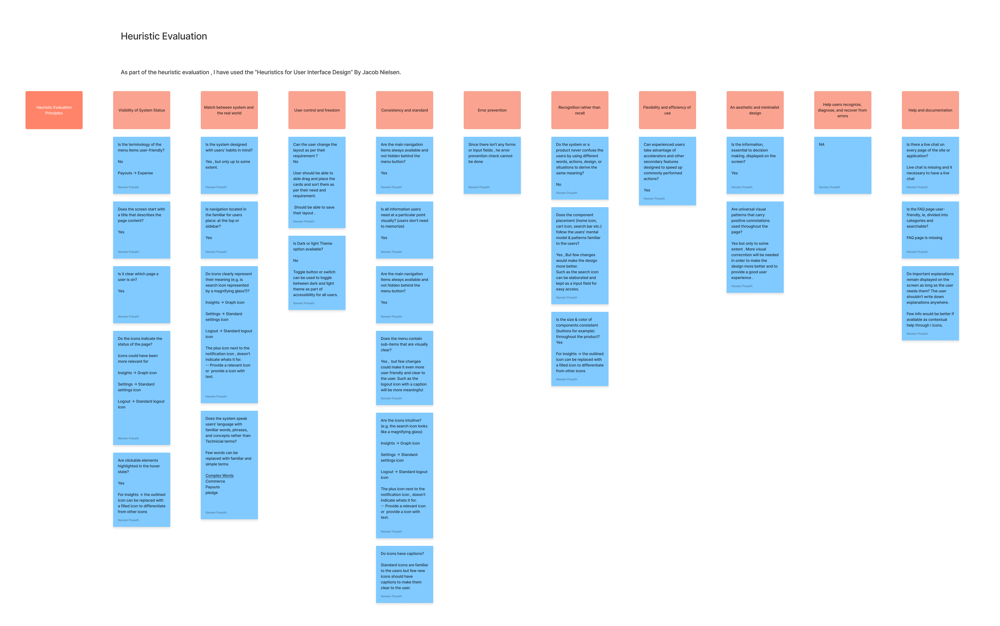

A systematic usability audit of an AI-powered video analytics platform using Jakob Nielsen's 10 Usability Heuristics, identifying 20+ actionable usability issues across the product interface.

VisionGuard is an AI-powered video analytics platform that helps businesses monitor operations through camera feeds. As a complex B2B SaaS product with dashboards, analytics, and real-time monitoring, it presented a rich surface area for usability analysis.
I applied Jakob Nielsen's 10 Usability Heuristics as a systematic lens to evaluate each area of the VisionGuard interface, documenting findings using a question → assessment → recommendation structure.
Identified core user tasks and interface areas: navigation, dashboard cards, settings, icons, content hierarchy, help pages, and error states.
Systematically walked through each of Nielsen's 10 heuristics, formulating evaluation questions specific to the VisionGuard interface.
Recorded each finding with a yes/no assessment, specific examples from the interface, and the design principle being violated.
Assigned severity levels (high / medium / low) based on frequency, impact on task completion, and persistence of the issue.
Proposed specific, actionable design improvements tied to each finding — not vague suggestions, but concrete UI changes.
Across all 10 heuristics, I identified 20+ usability issues. Here are the most significant findings grouped by heuristic.
A consolidated view of all findings, severity levels, and priority recommendations.
| Heuristic | Severity | Key issue |
|---|---|---|
| 1. Visibility of system status | Medium | Non-intuitive menu terminology and icon choices |
| 2. Match with real world | Medium | Complex jargon instead of plain language |
| 3. User control and freedom | High | No layout customisation or dark mode |
| 4. Consistency and standards | Medium | Inconsistent icon styles across pages |
| 5. Error prevention | Low | Limited forms reduce error surface |
| 6. Recognition over recall | Medium | Search bar hidden behind icon |
| 7. Flexibility and efficiency | Medium | No keyboard shortcuts or power-user features |
| 8. Aesthetic and minimalist design | Medium | Weak visual hierarchy, inconsistent icon fills |
| 9. Error recovery | High | FAQ page is missing entirely |
| 10. Help and documentation | High | No live chat, no contextual help, no onboarding |
This evaluation demonstrates the ability to apply established UX frameworks methodically — not just identifying issues, but structuring findings in a way that's actionable for design and development teams.
Every recommendation is tied to a specific finding and heuristic principle. This approach aligns with human factors methodology: grounding design decisions in established usability evidence rather than personal preference.
Heuristic evaluation is a core method in IEC 62366-1 formative usability evaluation for medical devices. This project demonstrates my ability to conduct systematic expert reviews — a skill directly transferable to MedTech human factors engineering.
In a professional context, I would complement this expert review with user testing sessions to validate findings, add task-based severity scoring, and create a prioritised remediation roadmap with effort estimates.